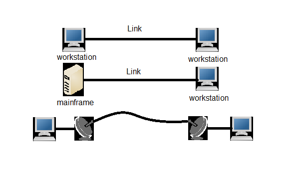
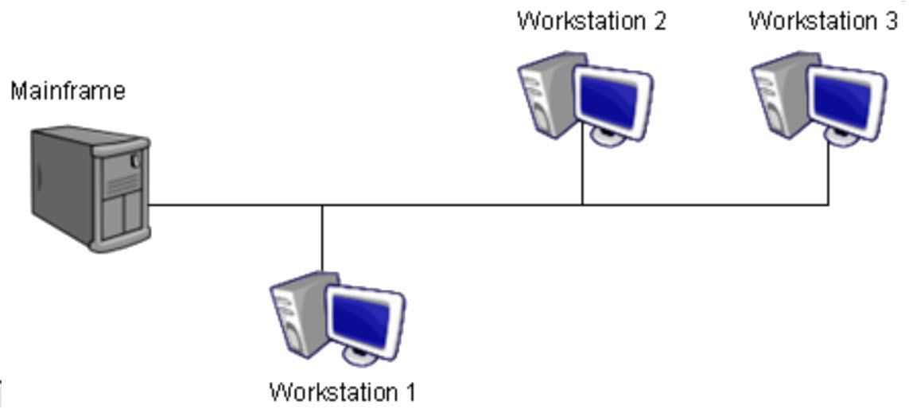

แบบจุดต่อจุด (Point-to-Point)
คือ วิธีเชื่อมต่อสื่อส่งข้อมูลระหว่าง 2 อุปกรณ์ โดยมีเส้นทางเพียงเส้นเดียว เช่น การเชื่อมต่อระหว่างคอมพิวเตอร์และโทรศัพท์มือถือ
ตัวอย่างการใช้งาน: การเชื่อมต่อระหว่างคอมพิวเตอร์สองเครื่องด้วยสาย USB, การเชื่อมต่อ Bluetooth ระหว่างโทรศัพท์กับหูฟัง

การเชื่อมต่อแบบ Point-to-Point
แบบหลายจุดหรือมัลติพอยท์ (Multi-Point)
เรียกอีกอย่างว่า multidrop line หมายถึง สื่อส่งข้อมูล 1 สื่อมีการเชื่อมต่อไปยังหลายอุปกรณ์โดยใช้สื่อส่งข้อมูลเดียว เช่น การกระจายข้อมูลของ Access Point ผ่าน WIFI
ตัวอย่างการใช้งาน: ระบบเครือข่ายท้องถิ่น (LAN), การกระจายสัญญาณ Wi-Fi, ระบบเครือข่ายแบบบัส (Bus Network)

การเชื่อมต่อแบบ Multi-Point